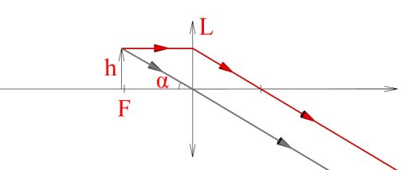
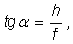
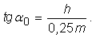
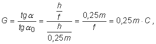
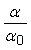
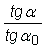

Lupa
 Activitatea experimentală 1
Activitatea experimentală 1
Alfă de existenţa unor detalii invizibile pentru ochiul tău. Foloseşte o lentilă convergentă cu distanţa focală de câţiva cm.
Pasul 1. Aproie lentila de o zonă albă a ecranului unui monitor de calculator în funcţiune. Observă mulţimea de mici zone distincte şi culorile
acestora.
Pasul 2. Utilizează o aplicaţie simplă de grafică (cum este Paint) şi obţine pe ecran zone de diferite culori. Observă prin lentilă
detaliile acestor zone.
Pasul 3. Desenează pe ecran, pe fundal negru, un segment verde. Estimează distanţa dintre zonele luminoase care alcătuiesc segmentul.
O zonă alba a ecranului unui monitor în funcţiune pare uniformă. Privind însă printr−o lentilă convergentă cu convergenţă mare, zona albă se
dovedeşte a fi din numeroase mici zone roşii, verzi şi albastre! Distanţa dintre două astfel de mici zone adiacente este de aproximativ o zecime de mm!
Oricare ar fi culoarea aparentă a unei zone, aceasta este alcătuită în realitate din mici zone având mereu aceleaşi culori: roşu, verde şi albastru −
diferă doar intensitatea luminii emise de fiecare dintre aceste zone.
 Provocarea 1
Provocarea 1
Când lucrezi cu un calculator, priveşti ecranul monitorului de la aproximativ 0,5 m.
Estimează unghiul format de razele care sosesc la ochiul tau de la două zone ale ecranului, între care există distanţa de 0,1 mm.
Un cerc cu raza de o jumătate de metru are circumferinţa de aproximativ 3 m. Două zone între care există o distanţă de 0,1 mm, ocupă aproximativ
1/30.000 din circumferinţa cercului. Aceasta corespunde unui unghi de aproximativ 0,7 minute de arc, sub unghiul limită de un minut de arc!
De aceea, nu poţi vedea distinc aceste zone − culorile se "amestecă" şi eşti "păcălit" − vezi culoarea care rezultă prin combinarea în diferite
proporţii a culorilor primare: roşu, verde şi albastru!
Lentila convergentă cu convergenţă mare ţi−a dezvăluit detalii pe care nu le−ai fi văzut privind cu ochiul liber.

Lupa este o lentilă convergentă cu convergenţă mare.
Provocarea 2
De câte ori măreşte o lupă unghiul corespunzător detaliilor unui obiect?
Poziţionând lupa faţă de obiect la o distanţă cu puţin mai mică decât distanţa focală a lentilei, un fascicul divergent de lumină, provenind de la un
detaliu al obiectului, devine aproape paralel (figura 1).

Fig. 1.  Lupa reduce divergenţa unui fascicul.
Lupa reduce divergenţa unui fascicul.
Imaginea este virtuală, dreaptă, mult mai mare şi mult mai îndepărtată decât obiectul.
Tangenta unghiului sub care vezi obiectul privind prin lupă este aproximativ

unde h este înălţimea obiectului, iar f este distanţa focală a lupei.
Dacă ai privi obiectul cu ochiul liber, de la 0,25 m (distanţa optimă de vedere clară), tangenta unghiului sub care ai vedea obiectul ar fi:

Dacă tg a > tg a0, atunci
a > a0, adică vezi detaliile obiectului sub un unghi mai favorabil
decât atunci când ai privi cu ochiul liber.
Numim grosismentul unui instrument optic factorul de mărire a tangentei unghiului sub care este văzut obiectul, utilizând acel instrument.
Grosismentul lupei este, aşadar:

unde C este convergenţa lupei.
Provocarea 3
Cât este grosismentul lupei pe care ai folosit−o la activitatea experimentală 1?
Pentru unghiuri mici, raportul tangentelor unghiurilor este aproximativ egal cu raportul unghiurilor. Cu cât unghiurile sunt mai mici, cu atât această
aproximaţie este mai bună.
Activitatea experimentală 2
Foloseşte un calculator care are funcţii trigonometrice şi verifică această aproximaţie pentru valorile din tabelul 1, rotunjind rapoartele la
primele trei zecimale.
Tabelul 1. Aproximarea raportuli tangentelor cu raportul unghiurilor.
a0
(0) |
a
(0) |
 |
 |
| 1 |
1 |
1,000 |
|
| 2 |
2,000 |
|
| 3 |
3,000 |
|
| 4 |
4,000 |
|
| 5 |
5,000 |
|
| 6 |
6,000 |
|
| 7 |
7,000 |
|
| 8 |
8,000 |
|
| 9 |
9,000 |
|
| 10 |
10,000 |
|
O lupă cu convergenţa 20 dioptrii, măreşte de 5 ori unghiul sub care poţi vedea detaliile obiectului.
Astfel, unghiuri sub limita 1' pot trece peste această limită şi detalii invizibile pentru ochi devin vizibile folosind o lupă!